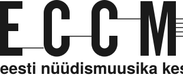
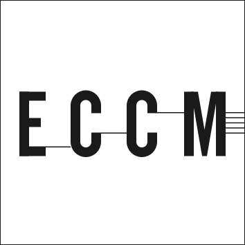
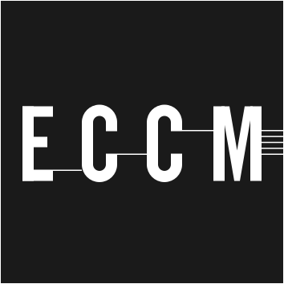
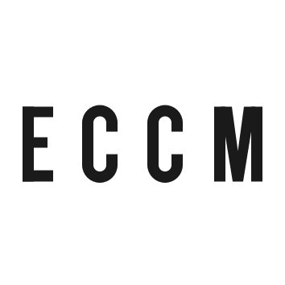
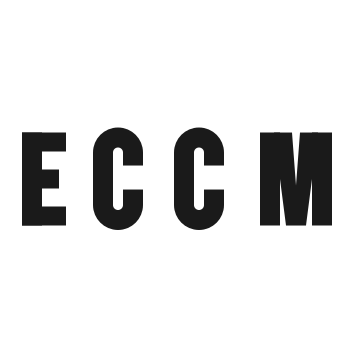
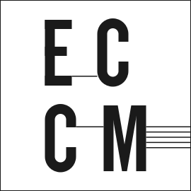
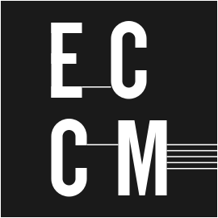
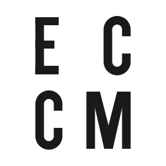
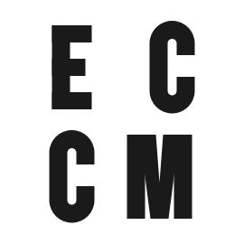
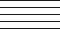

One family, Schibsted Grotesk. Headings are weight 400 and the hierarchy comes from size and space, never from bold or from a rule. On a page whose scheme is derived from its picture, Literata takes the headings when the picture's own type reads as serif, and the body only on a ground near white.
Tööprotsessi viimane hetk, võimalus olla tunnistajaks kolme osaleja koosmõjus tekkinud olukorrale.
An event title, h1
Gestuurid/situatsioonid: ilma partituurita kuulamine. Marianna Liik, Artjom Astrov, Maryn-Liis Rüütelmaa
Prose: paragraphs, a heading, a link, the small register
Avalik žest ei ole valmis teose esitlus ega klassikaline kontsert. See on kümnepäevase protsessi viimane hetk, võimalus olla tunnistajaks olukorrale, mis on tekkinud kolme osaleja koosmõjus ja mida ei saa korrata täpselt samal kujul.
Vahepealkiri proosas
Kõigile, keda huvitab heli, mis ei ole komponeeritud, ja kes on valmis kuulama ilma partituurita. Vaata ka kujundust pildist.
Väike register, mida kannavad jalus, kuupäevad ja sildid.
Serif, on a page whose picture reads as serif: title, facts and credits in Literata, and the body too on a ground near white
Sound Plasma 10
Millal
Kus
Mustpeade maja valge saal, Pikk 26, Tallinn
Sound Plasma 10. juubelikontserdil kohtuvad Tallinna Uue Muusika Ansambel ja defunensemble. Kümme aastat mikrotonaalset muusikat, kaks ansamblit ühel laval ja üks õhtu, mida ei saa korrata.
Esinejad
Tallinna Uue Muusika Ansambel, defunensemble
Graafiline disain
Jaan Evart
The same on a dark derived ground: title, facts and credits keep the serif, the body stays in the sans
Uus kontserdisari: Up to Three / Kuni kolm
Millal
Kus
ECCM saal, Pühavaimu 9, Tallinn
Kuni kolm esinejat, kuni kolm teost, kuni kolm veerandtundi. Sari, mis mahub ühte õhtusse ja jätab ruumi vestluseks.
Artist bios: after the body and before the credits, the name an h2 in the prose register, the paragraphs at the measure, the link the last line, three steps of space between bios and one within, a square photo at 5.5rem beside the name when a row has one
Alissa Šnaider
Alissa Šnaider on kunstnik, koreograaf, dramaturg ja kuraator, kes tegutseb nii etenduskunstide kui visuaalkunsti valdkonnas.
Tema looming hõlmab nii koreograafiat, lavastamist, fotograafiat kui ka kirjutamist. Oma praktikas käsitleb ta žesti mitte pelgalt väljendusvahendina, vaid tegevusena, mis konfigureerib tähelepanu, aja ja kehade vahelisi suhteid. Selle asemel, et luua kindlaid vorme, tekitab ta olukordi, milles kohalolu, viivitus, nihestatus ja haavatavus jäävad aktiivseteks seisunditeks.
Alissa on aktsioonidesarja „Gestuurid/situatsioonid“ algataja ning käesoleva versiooni puhul on tegemist algse gestuuride formaadi edasiarendusega, mille raames luuakse performatiivseid olukordi, mille keskmes on risk, mittekoordineeritud olek ja kuulamine. Projekt toimib teisaldatava struktuurina, mida aktiveerivad erinevad osalejate kooslused ja nende kontekstispetsiifilised žestid.
Tema visuaalne looming laiendab neid olukordi, käsitledes pilte pigem tegevuse jäägina kui kujutistena. Kirjutamine toimib tema loomingus väljendus- ja sekkumisvahendina, saates protsesse ilma neid stabiliseerimata.
Ta tegutseb rahvusvaheliselt nii kunsti-, kuraatori- kui ka dramaturgilistes kontekstides.
Jaan Evart on graafiline disainer, kelle käe all on sündinud sarja „Gestuurid/situatsioonid“ kujundus. Ta töötab trüki ja ekraani vahel.
Color
White is the material and type is the object. Every pair is computed against white and color is never the only cue: the accent sits only on an underline under the pointer and on the focus ring.
--eccm-ground #ffffff
--eccm-ink #1a1a1a, 17.40:1
--eccm-ink-2 #555555, 7.46:1
--eccm-rule #d9d9d9
--eccm-rule-strong #999999, the link's line
--eccm-accent #b3400f, 5.74:1
A page derived from its picture sets the same roles with its own tokens: --ev-ground, --ev-ink, --ev-ink2, --ev-accent, --ev-btn-fill, --ev-on-btn, --ev-title-face, --ev-title-weight, --ev-body-face. The examples are on the design from a picture page.
Space
One scale, and no number that is not on it. There is always more space around a group than inside it, by at least two steps.
--eccm-s-1
--eccm-s-2
--eccm-s-3
--eccm-s-4
--eccm-s-6
--eccm-s-8
--eccm-s-12
--eccm-s-16
--eccm-s-24
--eccm-gutter1rem, 2rem on a deskthe frame's edge.framemin(100% - 2 * gutter, 72rem)the page frame--eccm-pic-w300pxthe list picture, at its own size--eccm-mark-w20rem, 11rem on a phonethe mark in the header
Buttons
A word in a 3rem box ruled in ink, no radius, no shadow, always in the system face. Two modes: regular, ruled, and inversed, filled, each with a disabled state at 45 per cent that takes no pointer. On a page derived from its picture the button reads that scheme's tokens, with the page's own as the fallback.
Three files of one mark. An Estonian page carries the Estonian one in its header, an English page the English one, and the two-language one stays for the places where one language would be wrong. The mark is drawn row by row off the JPEG eccm.ee serves and its viewBox is the ink's own box, so a page aligns to ink and not to air. The tagline's face is interim, DIN Condensed squeezed to the measured width, until ECCM names the typeface or sends the vector.

logo-et.svg, Estonian, 310 by 133logo-en.svg, English, 310 by 133logo.svg, two languages, 310 by 147at the phone width, 11rem
The square mark, no tagline, for icons and avatars: positive and negative, each with and without a one pixel outline that stays one pixel at any size, and a plain one without the hairlines for the small sizes. The letters, E's left edge to M's right edge, are the block that is aligned: two stems of margin each side, and the E's middle bar on the square's centre line, which lifts the block two units above the geometric centre, the way a wide mark asks. The stave is ornament at its own width, as in the logo, hanging into the right margin.
logo-square.svglogo-square-neg.svg

logo-square-outline.svg

logo-square-neg-outline.svg

logo-square-plain.svg, 48 and 64 px, the wider M

logo-square-bold.svg, 16 and 32 px and the favicon
The stacked alternative, EC over CM: the rows share one left edge, two stems apart, the first row spread to the block's edges, the E over the C and the C over the M with the join drawn across the gap, the block centred in the square, the stave at its own width, and the join that crossed from the first C to the second dropped, since the rows part it.
logo-stack.svglogo-stack-neg.svg

logo-stack-outline.svg

logo-stack-neg-outline.svg

logo-stack-plain.svg, 48 and 64 px

logo-stack-bold.svg, 16 and 32 px
The stave on its own, an element for graphics: five one pixel lines on a seven pixel pitch, used at its size or a whole multiple. It sits in the top right corner, flush to the right edge, with the padding from the top only, in the ink of the ground it is on.

stave.svg at twice its size, in the corner of a white ground, flush right, padded from the top
the same on a dark ground
The icon sizes: 16, 32, 48, 64, 128, 180, 192, 256 and 512, and a favicon.ico holding 16, 32 and 48. From 128 up each size is its own drawing with the hairlines snapped to whole pixels on an integer pitch, which is what keeps five stave lines one shade; at 48 and 64 the hairlines are dropped and the M is 12 units wider with its arms a stem wide, so its counters open; at 16 and 32 the letters are the bold set, stems of 20 units, the way eccm.ee's own favicon fills its square. At 16 a stem is 0.6 px and the letters are still four blobs; a true 16 px mark with whole-pixel strokes is a decision not taken here.